Projetos
Projeto 1
Meu projeto principal é este site. Irei criar um código backend para ele e futuramente quero monitorar os acessos, criar uma Database e talvez transformá-lo em blog ou um site de compras. Abaixo um protótipo desenvolvido no Figma.
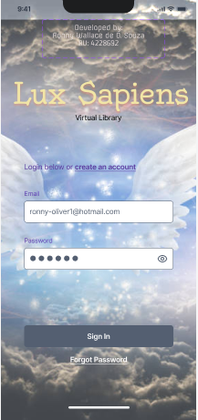Projeto 2
Em paralelo faço uma trilha pela área de Cyber security, possuindo já alguns certificados e também pretendo me tornar um poliglota. Você pode me ajudar, caso se interessar me chame, estou em busca de uma oportunidade!
 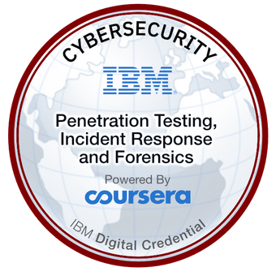
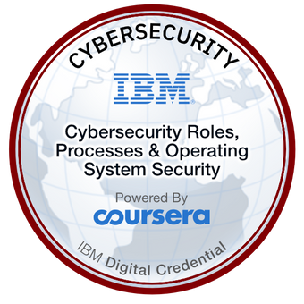
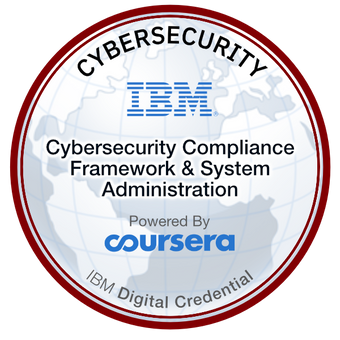
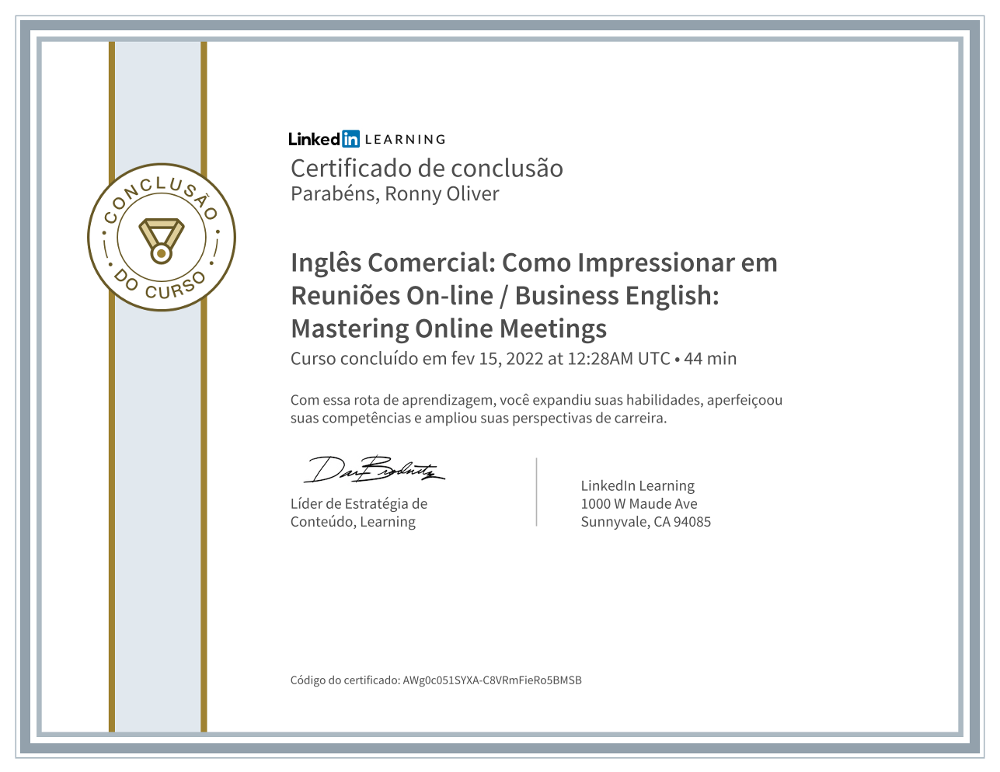
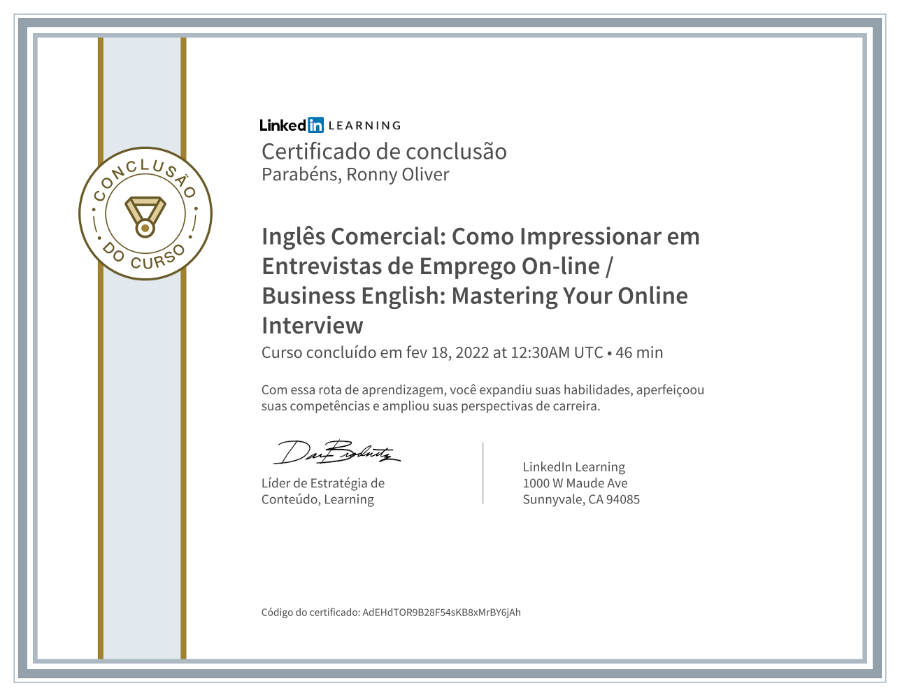
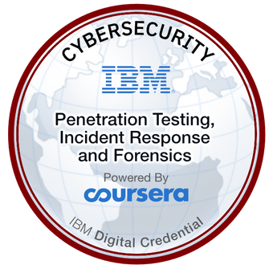
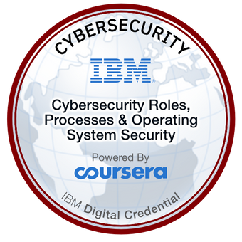
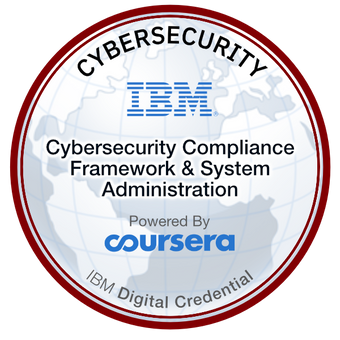
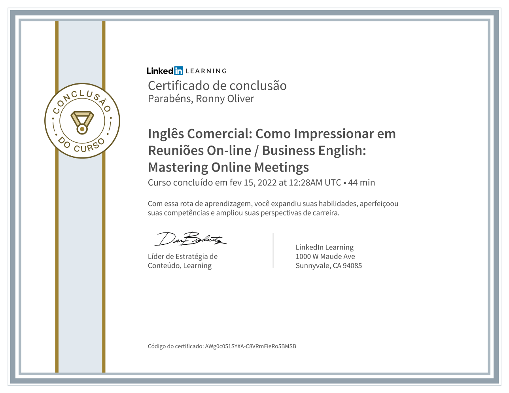
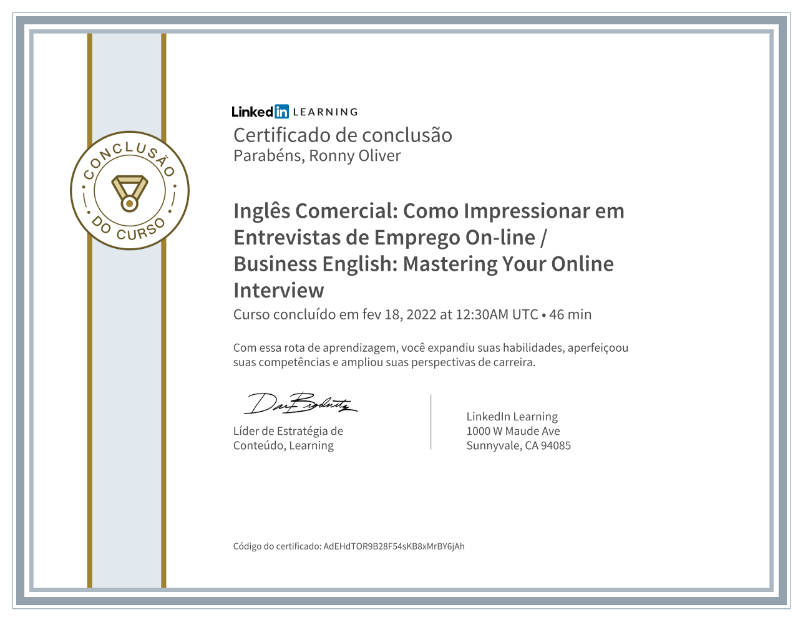